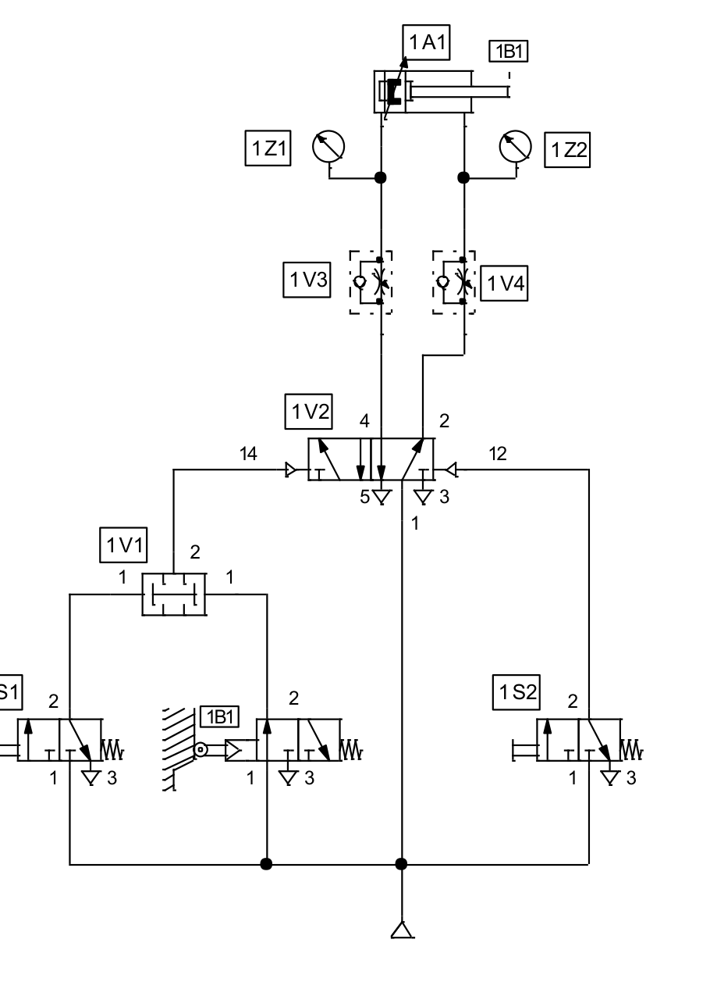

EBAU 2024 · Tecnología e Ingeniería II · Región de Murcia · Junio (Ordinaria)
Examen de la Región de Murcia (Universidad de Murcia y UPCT), convocatoria de junio de 2024. Consta de tres bloques con opcionalidad: en el Bloque I se responden 2 de las 4 cuestiones (1,25 pt c/u), en el Bloque II 1 de los 2 ejercicios (2,5 pt) y en el Bloque III 2 de los 3 ejercicios (2,5 pt c/u). Aquí se resuelven todas. Selecciona un bloque o una cuestión en la barra lateral.
Bloque I · Cuestiones (2 de 4)
Propiedades y ensayos de materiales, diagrama de tracción, ciclo frigorífico de Carnot y motores MCIA.
Bloque II · Ejercicios (1 de 2)
Cortantes y momentos flectores en una viga biapoyada, y análisis de un circuito neumático con simbología normalizada.
📄 Enunciado
Responder sobre propiedades, ensayos mecánicos y tratamientos térmicos de materiales de ingeniería:
- Definir de forma breve y concisa las propiedades mecánicas dureza y tenacidad. (0,25 p.)
- Indicar si existe algún ensayo para medir estas propiedades y explicar brevemente en qué consiste. (0,5 p.)
- Explicar en qué consiste el tratamiento térmico de temple en aceros, qué factores influyen y cómo afecta a las propiedades del apartado a). (0,5 p.)
💡 ¿Qué vamos a aplicar?
Repasamos dos propiedades mecánicas y sus ensayos normalizados, y el tratamiento térmico de temple (calentamiento + enfriamiento rápido) que endurece el acero a costa de su tenacidad.
a) Dureza y tenacidad
- Dureza: resistencia que opone la superficie de un material a ser rayada o penetrada (a la deformación plástica localizada).
- Tenacidad: energía que absorbe un material antes de romperse; capacidad de deformarse plásticamente absorbiendo energía frente a impactos. Lo contrario es la fragilidad.
b) Ensayos
- Dureza: ensayos de penetración — Brinell (bola de acero), Vickers (pirámide de diamante) y Rockwell (cono/bola, lectura directa). Se aplica una carga con el penetrador y se mide la huella; a menor huella, mayor dureza.
- Tenacidad: ensayo de resiliencia por impacto Charpy (o Izod): un péndulo golpea una probeta entallada y se mide la energía absorbida en la rotura (J o J/cm²).
c) Temple
El temple consiste en calentar el acero por encima de su temperatura de austenización y enfriarlo rápidamente (agua, aceite…) para obtener una estructura muy dura y frágil (martensita).
Factores que influyen: temperatura de calentamiento, tiempo de permanencia, velocidad de enfriamiento (severidad del medio), contenido en carbono y elementos de aleación (templabilidad), y tamaño/geometría de la pieza.
Efecto en las propiedades: aumenta mucho la dureza y la resistencia, pero disminuye la tenacidad (el acero se vuelve más frágil). Por eso tras el temple suele aplicarse un revenido que recupera algo de tenacidad reduciendo tensiones.
📄 Enunciado
- En la figura se representa un diagrama típico del ensayo de tracción de un acero. Explicar qué magnitud se representa en cada eje y cuáles son las zonas y puntos característicos. (0,5 p.)
- Una probeta de sección circular de 25 mm de diámetro y 250 mm de longitud se somete a tracción: hay deformación elástica hasta una fuerza de 15 kN, la zona elástica proporcional llega hasta 13 kN con una deformación máxima del 0,2 % en esa zona, y la fuerza máxima de rotura es 25 kN. Calcular: (0,75 p.)
- b.1) La tensión límite elástica.
- b.2) El módulo elástico (módulo de Young).
- b.3) La tensión máxima de trabajo con coeficiente de seguridad 3 sobre la tensión máxima de rotura.
💡 ¿Qué vamos a aplicar?
La tensión es \(\sigma=F/A\) con \(A=\pi D^2/4\); la deformación unitaria \(\varepsilon=\Delta L/L_0\). En la zona proporcional rige la ley de Hooke \(\sigma=E\,\varepsilon\). La tensión admisible con coeficiente de seguridad n es \(\sigma_{adm}=\sigma_{rotura}/n\).
a) Ejes y puntos del diagrama
En el eje horizontal se representa la deformación unitaria \(\varepsilon=\Delta L/L_0\) (adimensional o %); en el eje vertical la tensión \(\sigma=F/A\) (en MPa). Zonas y puntos característicos:
- Zona elástica (recta inicial, del origen al punto 1-2): deformación reversible; su pendiente es el módulo de Young E. Punto 1 = límite de proporcionalidad; punto 2 = límite elástico.
- Zona de fluencia (puntos 3 y 4): la probeta se alarga casi sin aumentar la carga (límites superior e inferior de fluencia).
- Zona plástica / de endurecimiento: la tensión vuelve a subir hasta el punto 5 = resistencia máxima a tracción (carga máxima).
- Zona de estricción: la sección se reduce localmente y la curva baja hasta el punto 6 = rotura.
b) Cálculos
Sección de la probeta:
b.1) Tensión límite elástica
El límite de la zona elástica proporcional corresponde a F = 13 kN:
b.2) Módulo de Young
En la zona proporcional, con \(\varepsilon=0{,}2\%=0{,}002\):
b.3) Tensión máxima de trabajo (n = 3)
📄 Enunciado
- Explicar el funcionamiento de una máquina frigorífica que funciona según un ciclo ideal de Carnot y representarlo en un diagrama p–V. (0,5 p.)
- Enumerar los componentes básicos de una instalación frigorífica real, explicar la función de cada uno y relacionarlos con las transformaciones del ciclo ideal de Carnot. (0,75 p.)
💡 ¿Qué vamos a aplicar?
La máquina frigorífica es una máquina térmica que funciona en sentido inverso: consume trabajo para extraer calor del foco frío y cederlo al foco caliente. El ciclo ideal de Carnot inverso consta de dos isotermas y dos adiabáticas.
a) Ciclo frigorífico de Carnot
Una máquina frigorífica extrae calor Qf del foco frío (el interior a refrigerar) y lo cede al foco caliente (Qc) consumiendo un trabajo W. Es un ciclo de Carnot recorrido en sentido antihorario (inverso), con cuatro transformaciones reversibles:
- Compresión adiabática: el fluido se comprime sin intercambiar calor; sube su presión y temperatura.
- Compresión isoterma (cesión): a Tc constante cede calor Qc al foco caliente.
- Expansión adiabática: el fluido se expande sin intercambio de calor; baja su temperatura hasta Tf.
- Expansión isoterma (absorción): a Tf constante absorbe calor Qf del foco frío (produce el frío).
b) Componentes de la instalación real y su relación con el ciclo
| Componente | Función | Transformación |
|---|---|---|
| Compresor | Aspira el vapor a baja presión y lo comprime elevando su presión y temperatura. | Compresión adiabática |
| Condensador | El fluido cede calor al ambiente (foco caliente) y se condensa (pasa a líquido). | Cesión isoterma de Qc |
| Válvula de expansión | Reduce bruscamente la presión; el fluido se enfría. | Expansión adiabática |
| Evaporador | El fluido absorbe calor del recinto a enfriar (foco frío) y se evapora: produce el frío. | Absorción isoterma de Qf |
📄 Enunciado
- Explicar el funcionamiento y los elementos principales de un motor de combustión interna alternativo (MCIA) de 4 tiempos. (0,75 p.)
- Explicar las diferencias básicas entre los MCIA de encendido provocado (MEP) y los de encendido por compresión (MEC). (0,5 p.)
💡 ¿Qué vamos a aplicar?
En un MCIA de 4 tiempos el ciclo se completa en dos vueltas del cigüeñal (cuatro carreras del pistón): admisión, compresión, explosión-expansión y escape.
a) Funcionamiento y elementos del MCIA de 4T
El ciclo se realiza en 4 carreras del pistón (2 vueltas de cigüeñal):
- Admisión: el pistón baja con la válvula de admisión abierta y entra la mezcla (MEP) o aire (MEC).
- Compresión: ambas válvulas cerradas; el pistón sube y comprime el fluido.
- Explosión/Expansión (trabajo): se produce la combustión (chispa en MEP o autoinflamación en MEC); los gases empujan el pistón hacia abajo. Es la única carrera motriz.
- Escape: el pistón sube con la válvula de escape abierta y expulsa los gases quemados.
Elementos principales: bloque y cilindros, pistón (émbolo), biela, cigüeñal, culata con válvulas de admisión y escape accionadas por el árbol de levas, bujía (MEP) o inyector (MEC), y los sistemas de distribución, lubricación y refrigeración.
b) Diferencias MEP / MEC
| MEP (Otto / gasolina) | MEC (Diésel / gasóleo) | |
|---|---|---|
| Combustible | Gasolina | Gasóleo (diésel) |
| Mezcla | Aire + combustible antes de comprimir | Solo aire; el combustible se inyecta al final |
| Encendido | Provocado por chispa (bujía) | Por compresión (autoinflamación) |
| Relación de compresión | Menor (≈ 8–12) | Mayor (≈ 16–22) |
| Rendimiento | Menor | Mayor |
📄 Enunciado
La viga de la figura forma parte de una estructura metálica. Para los datos indicados, calcular:
- Las reacciones en los apoyos. (0,5 p.)
- Las ecuaciones de fuerzas cortantes y momentos flectores en cada tramo en función de x. Indicar unidades y el criterio de signos. (1,5 p.)
- Representar gráficamente ambas ecuaciones e indicar dónde se da el momento flector máximo. (0,5 p.)
💡 ¿Qué vamos a aplicar?
Equilibrio de la viga: \(\sum F_y=0\) y \(\sum M=0\). Ojo: P1 = 40 kN actúa hacia abajo y P2 = 20 kN hacia arriba. El cortante V(x) es la suma de fuerzas verticales a la izquierda de la sección y el momento M(x) la suma de sus momentos. Criterio de signos: cortante positivo si las fuerzas de la izquierda van hacia arriba; momento positivo si flecta la viga cóncava hacia arriba (tracción abajo).
a) Reacciones
Tomamos momentos respecto de A (positivo antihorario), con las reacciones verticales RA y RB hacia arriba. P1=40 kN (↓) en x=2 m y P2=20 kN (↑) en x=4 m:
b) Ecuaciones de cortante y momento por tramos
Tramo A–1 (0 ≤ x ≤ 2 m):
En x=0: M=0; en x=2: M=40 kN·m.
Tramo 1–2 (2 ≤ x ≤ 4 m): (pasada la carga P1 hacia abajo)
En x=2: M=40 kN·m; en x=4: M=0.
Tramo 2–B (4 ≤ x ≤ 6 m): (pasada la carga P2 hacia arriba)
c) Diagramas
El momento flector es máximo bajo la carga P1 (sección 1, x = 2 m), donde vale 40 kN·m. En el tercer tramo la viga no tiene esfuerzos (V = 0 y M = 0), coherente con RB = 0.
📄 Enunciado
Analizar el sistema neumático representado con simbología normalizada. Se pide:
- Identificar y describir los componentes: 1A1, 1B1, 1V1, 1V2, 1V3 y 1S1. (0,5 p.)
- Explicar el funcionamiento del circuito y las condiciones para las carreras de extensión y retracción (reposo = posición de la figura). (1,0 p.)
- Explicar el funcionamiento de las válvulas 1V3 y 1V4 y justificar la posición de sus antirretornos. (0,25 p.)
- Calcular la fuerza neta de extensión: presión de entrada 7 bar(rel) en el lado del émbolo (Ø 20 mm), contrapresión nula, rozamiento 10 % de la fuerza neta. (0,75 p.)

💡 ¿Qué vamos a aplicar?
Identificamos el actuador y los elementos de mando, distribución y regulación. La fuerza que ejerce un cilindro es \(F=p\cdot A\), con \(A=\pi D^2/4\); descontamos la fuerza de rozamiento para obtener la fuerza efectiva o neta.
a) Identificación de componentes
- 1A1 — Cilindro de doble efecto (actuador): recibe aire por ambas cámaras para las carreras de extensión y retracción.
- 1B1 — Válvula 3/2 con rodillo (final de carrera / detector de posición) accionada mecánicamente por la leva del vástago y retorno por muelle.
- 1V1 — Válvula selectora (OR) de dos entradas y una salida (función lógica O).
- 1V2 — Distribuidor 5/2 con doble pilotaje neumático (biestable, con memoria): dirige el aire a una u otra cámara del cilindro.
- 1V3 — Válvula reguladora de caudal unidireccional (estranguladora + antirretorno) para controlar la velocidad.
- 1S1 — Válvula 3/2 de accionamiento manual (pulsador) con retorno por muelle (elemento de mando/emisor de señal).
b) Funcionamiento del circuito
El distribuidor 1V2 (5/2 biestable) gobierna el cilindro y mantiene su posición hasta recibir la señal contraria (memoria). Para conmutarlo hay que pilotarlo por sus lados 14 (extensión) o 12 (retracción):
- Carrera de extensión: se pilota 1V2 por el lado 14. La señal procede de la válvula selectora 1V1 (OR), que da salida si se acciona 1S1 o 1B1 (basta una de las dos señales). El aire pasa a la cámara del émbolo y el vástago avanza.
- Carrera de retracción: se pilota 1V2 por el lado 12 mediante la señal de 1S2 (y/o el final de carrera correspondiente). El aire entra por la cámara del vástago y el cilindro retrocede.
La velocidad en cada sentido se ajusta con las reguladoras 1V3 y 1V4.
c) Válvulas 1V3 y 1V4
Son reguladoras de caudal unidireccionales: combinan una estrangulación (regulable) con un antirretorno en paralelo. El aire pasa libremente por el antirretorno en un sentido y es obligado a atravesar la estrangulación en el sentido contrario. Se montan para regular el caudal de escape del cilindro (regulación por escape), que da un avance más uniforme; por eso el antirretorno se orienta de modo que el aire de entrada pase libre y el de salida quede estrangulado.
d) Fuerza neta de extensión
Área del émbolo (Ø 20 mm) y presión 7 bar = 7·105 Pa:
La contrapresión en la cámara del vástago es nula. El rozamiento es el 10 % de la fuerza neta, luego:
📄 Enunciado
Analizar el circuito serie de la figura, con v(t) = 225√2·sen(320t) V, R = 100 Ω, L = 200 mH y C = 80 µF. Calcular:
- La impedancia total equivalente; razonar si es inductivo o capacitivo y obtener el ángulo de desfase y el factor de potencia. (1,0 p.)
- Las intensidades eficaz, máxima e instantánea. (0,5 p.)
- La tensión eficaz en el condensador y en la bobina. (0,5 p.)
- Las potencias aparente, activa y reactiva. Representar el diagrama fasorial. (0,5 p.)
💡 ¿Qué vamos a aplicar?
Con \(\omega=320\ \mathrm{rad/s}\): \(X_L=\omega L\), \(X_C=\dfrac{1}{\omega C}\). La impedancia es \(Z=\sqrt{R^2+(X_L-X_C)^2}\), \(\tan\varphi=\dfrac{X_L-X_C}{R}\). El valor eficaz es \(V_{ef}=V_{max}/\sqrt2\); aquí \(V_{max}=225\sqrt2\Rightarrow V_{ef}=225\ \mathrm V\).
a) Impedancia, tipo de circuito, desfase y f.d.p.
Como \(X_L>X_C\), el circuito es inductivo (la corriente atrasa respecto a la tensión).
b) Intensidades
Con \(V_{ef}=225\ \mathrm V\) y \(V_{max}=225\sqrt2=318{,}2\ \mathrm V\):
La corriente atrasa 14° respecto a la tensión:
c) Tensiones en C y en L
d) Potencias y diagrama fasorial
📄 Enunciado
Control de un elevador con 4 entradas: transductores A₁, A₂ y pulsadores P₁, P₂. La salida F cumple: F=0 si P₁=P₂=0; F=1 si P₁=P₂=1; F=A₂ si P₁=0, P₂=1; y F=\(\overline{A_1\cdot A_2}\) si P₁=1, P₂=0. Se pide:
- Construir la tabla de verdad. (0,5 p.)
- Mapa de Karnaugh y función simplificada en suma de productos (minterms). (1,0 p.)
- Diseñar el circuito con el menor número de puertas NAND de dos entradas (simbología ANSI-IEEE). (1,0 p.)
💡 ¿Qué vamos a aplicar?
Traducimos las cuatro condiciones (según los pulsadores) a la salida para cada combinación de entradas, agrupamos en el mapa de Karnaugh de 4 variables y expresamos el resultado con puertas NAND (recordando que OR(a,b) = NAND(a',b')).
a) Tabla de verdad
Orden de bits Dec = 8·A₁+4·A₂+2·P₁+P₂. Para cada valor de (P₁,P₂) se aplica la condición correspondiente:
| Dec | A₁ | A₂ | P₁ | P₂ | F |
|---|---|---|---|---|---|
| 0 | 0 | 0 | 0 | 0 | 0 |
| 1 | 0 | 0 | 0 | 1 | 0 |
| 2 | 0 | 0 | 1 | 0 | 1 |
| 3 | 0 | 0 | 1 | 1 | 1 |
| 4 | 0 | 1 | 0 | 0 | 0 |
| 5 | 0 | 1 | 0 | 1 | 1 |
| 6 | 0 | 1 | 1 | 0 | 1 |
| 7 | 0 | 1 | 1 | 1 | 1 |
| 8 | 1 | 0 | 0 | 0 | 0 |
| 9 | 1 | 0 | 0 | 1 | 0 |
| 10 | 1 | 0 | 1 | 0 | 1 |
| 11 | 1 | 0 | 1 | 1 | 1 |
| 12 | 1 | 1 | 0 | 0 | 0 |
| 13 | 1 | 1 | 0 | 1 | 1 |
| 14 | 1 | 1 | 1 | 0 | 0 |
| 15 | 1 | 1 | 1 | 1 | 1 |
Minterms con F=1: ∑(2,3,5,6,7,10,11,13,15).
b) Mapa de Karnaugh y simplificación
| A₁A₂ \ P₁P₂ | 00 | 01 | 11 | 10 |
|---|---|---|---|---|
| 00 | 0 | 0 | 1 | 1 |
| 01 | 0 | 1 | 1 | 1 |
| 11 | 0 | 1 | 1 | 0 |
| 10 | 0 | 0 | 1 | 1 |
Agrupamos tres cuartetos:
- P₁·A₁' (grupo 2,3,6,7): A₁=0 y P₁=1.
- P₁·A₂' (grupo 2,3,10,11): A₂=0 y P₁=1.
- A₂·P₂ (grupo 5,7,13,15): A₂=1 y P₂=1.
c) Circuito con puertas NAND de 2 entradas
Como \(F=P_1\,\overline{A_1A_2}+A_2P_2\) es una suma de dos productos, y OR(a,b)=NAND(a',b'), bastan 4 puertas NAND de 2 entradas:
En efecto, \(F=\overline{G_2 G_3}=\overline{\overline{P_1G_1}\cdot\overline{A_2P_2}}=P_1G_1+A_2P_2=P_1\overline{A_1A_2}+A_2P_2\). ✓
📄 Enunciado
Sistema de control en lazo cerrado para mantener el régimen de giro de una bomba centrífuga (diagrama de bloques de la figura). Se pide:
- Función de transferencia del segundo lazo (interno) de realimentación C(s)/R₁(s). (0,75 p.)
- Función de transferencia del sistema C(s)/R(s). (0,75 p.)
- Particularizar con G₁=4, G₂=1/(s+2), G₃=1/(s+1), H₁=1/s. (0,5 p.)
- Indicar el orden del sistema y determinar su estabilidad por el criterio de Routh. (0,5 p.)
💡 ¿Qué vamos a aplicar?
Un lazo con realimentación negativa de ganancia directa G y realimentación H tiene función de transferencia \(\dfrac{G}{1+GH}\). Reducimos primero el lazo interno (H=1) y luego el externo (H=H₁). El criterio de Routh estudia el signo de la primera columna de la tabla formada con los coeficientes del denominador.
a) Lazo interno C(s)/R₁(s)
El lazo interno tiene rama directa G₂G₃ y realimentación unitaria negativa (la salida C vuelve al sumador b con signo −):
b) Sistema completo C(s)/R(s)
Sea M = G₂G₃/(1+G₂G₃). La rama directa hasta C es G₁·M y la realimentación externa es H₁ (negativa):
c) Particularización
Con G₁=4, G₂=1/(s+2), G₃=1/(s+1), H₁=1/s:
Multiplicando numerador y denominador por \(s(s+1)(s+2)\):
d) Orden y estabilidad (Routh)
El denominador es de grado 3 → sistema de 3.er orden. Ecuación característica \(s^3+3s^2+3s+4=0\). Tabla de Routh:
| s³ | 1 | 3 |
|---|---|---|
| s² | 3 | 4 |
| s¹ | b₁ = (3·3 − 1·4)/3 = 5/3 ≈ 1,67 | 0 |
| s⁰ | 4 |
Todos los términos de la primera columna (1; 3; 1,67; 4) son positivos: no hay cambios de signo, por lo que ninguna raíz tiene parte real positiva.